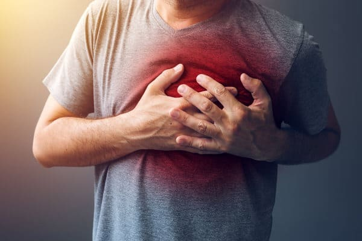

Do you feel like you are healthy enough to prevent any disease?
If yes, then you are mistaken like 93% of Indians. We all used to believe that we couldn't get rid of any disease because we didn't have any issue with our current way of living. But the reality is different.
In India, around 74% (6 million) of the total annual deaths occur because of NCDs, which mainly include Cardiovascular diseases, Cancers, Chronic respiratory diseases, and Diabetes. The chances of getting these diseases depend entirely on your lifestyle. You can't rely solely on Allopathic medicines to reduce the risk; in fact, Allopathic medicine often can't cure your disease permanently. It only provides instant relief.
According to a study, the average annual cost of treating an NCD patient with Allopathic medicine in India could rise to ₹36,520 by 2030. This translates to a lifetime cost of ₹7,30,400 to ₹14,60,800 for a typical lifespan of 20-40 years.
In India, around 74% (6 million) of the total annual deaths occur because of NCDs, which mainly include Cardiovascular diseases, Cancers, Chronic respiratory diseases, and Diabetes. The chances of getting these diseases depend entirely on your lifestyle. You can't rely solely on Allopathic medicines to reduce the risk; in fact, Allopathic medicine often can't cure your disease permanently. It only provides instant relief.
According to a study, the average annual cost of treating an NCD patient with Allopathic medicine in India could rise to ₹36,520 by 2030. This translates to a lifetime cost of ₹7,30,400 to ₹14,60,800 for a typical lifespan of 20-40 years.
Total Deaths because of NCD in
India (6 million)
India (6 million)
Total Annual deaths in India
Total Deaths because of Chronic respiratory diseases in India (1 million)
Total Annual deaths in India
Total Deaths because of Cancers in
India (1.2 million)
India (1.2 million)
Total Annual deaths in India

Total Deaths because of Cardiovascular Diseases in India (2.8 million)
Total Annual deaths in India
Total Deaths because of Diabetes in
India (0.4 million)
India (0.4 million)
Total Annual deaths in India
Health Issues
These are just a small, there are many people suffering from endless health & fitness issues and don't know how to treat them.



Unlocking Nature's Secrets for Better Health
Solution? Absolutely, we have the answer.
Our nature has already equipped us with a wide array of natural methods to not only cure, but also prevent diseases. These natural methods are effective in promoting health and come at zero cost. Even at home, we have a range of medicines that can help eliminate diseases without any adverse effects on the body, unlike Allopathic medicines. According to statistics, individuals who utilize these natural methods have a 30% lower risk of developing chronic diseases such as heart disease, stroke, and diabetes. In fact, 90% of heart disease and 3 out of 10 premature deaths can be prevented.
The Covid19 pandemic may have caused concern about future diseases, but they can all be prevented if we embrace natural treatments alongside Allopathic methods. This way, in emergencies, Allopathic treatment is readily available, while natural methods provide long-term solutions. Even minor health issues can be promptly addressed without any adverse effects.
Our nature has already equipped us with a wide array of natural methods to not only cure, but also prevent diseases. These natural methods are effective in promoting health and come at zero cost. Even at home, we have a range of medicines that can help eliminate diseases without any adverse effects on the body, unlike Allopathic medicines. According to statistics, individuals who utilize these natural methods have a 30% lower risk of developing chronic diseases such as heart disease, stroke, and diabetes. In fact, 90% of heart disease and 3 out of 10 premature deaths can be prevented.
The Covid19 pandemic may have caused concern about future diseases, but they can all be prevented if we embrace natural treatments alongside Allopathic methods. This way, in emergencies, Allopathic treatment is readily available, while natural methods provide long-term solutions. Even minor health issues can be promptly addressed without any adverse effects.
Discover the Power of Natural Remedial Solutions for Optimal Health with Us!
At our company, we offer a range of natural remedial solutions to help you achieve and maintain optimal health. Our solutions are backed by scientific research and are completely free of cost solutions with no side affects.
Effective Solutions
With us you will get help in curing your long running chronic disease & other state of un-healthiness in which we have to avoid the allopathic medicines, without spending any money.
Empowering Change
Our holistic approach focuses on addressing the root cause of health issues for long-lasting results. All are based on curing, prevention and growth of your body.
Features of our platform

Personalized AI Health Assistant
This will help you to get the natural home remedial solution for your every health related issue. Also helps in solving your every query related to health.
Personalized Workout Plan
Get the suggested workout plan based on natural ways such as Yoga & light weight calisthenics and then based on your choice or compatibility select your own workouts.
Personalized Dietary Plan
Get the suggested Dietary plan based on the natural ingredients or food item and then based on your choice or compatibility select your own dish to include in your Dietary Plan.
Recipe & Workout Guide
Get the curated video or text based guidance for performing or making any workout & recipe respectively.
Document Manager
One place for your all medical documents, bills and reports to make your insurance claim easy.
FAQ
Find answers to common questions about natural remedies and our services.
How do natural remedies work?
Natural remedies work by harnessing the healing properties of plants, herbs, and other natural substances to promote health and well-being. They actually work on three aspects of curing, prevention and promotion of health.
Are natural remedies safe?
Yes, when used correctly, natural remedies are generally safe and have no side effects compared to synthetic medications if taken with care.
Can natural remedies cure diseases?
While natural remedies can support the body's healing process, they can cure your diseases on but it takes time and effort.
How can I access your services?
To access our services, you can download our app from the Google Play. Our app provides a comprehensive platform for natural remedies and personalized health recommendations by your AI assistant.
Are we going to replace the allopathic medicines with natural medicines
No, we are not as it is true that natural medicines can cure every type of diseases and also promote your health for the upcoming strange diseases but it takes time in doing this and at sometime you require the urgent treatment, therefore we are focusing to introduce the natural medicines and urge people to adapt the natural way rather than completely relying on the allopathic medicines
Connect with Us
Email
For any inquiries, please mail us.
naturfit.ai@gmail.com
Phone
Feel free to give us a call.
+91-8305791500
Address
Visit our office.
IIT Delhi, Hauz Khas, South Delhi, Delhi, India (110016)

© 2024 NaturFit.ai. All rights reserved.